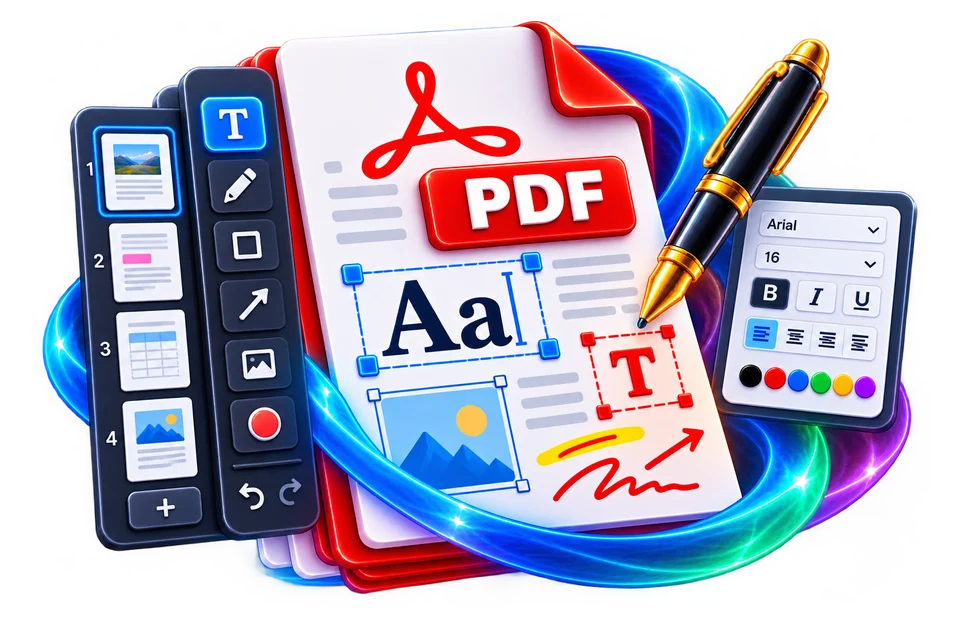

01
Open the PDF
DoKitly's free online PDF editor is designed for practical edits without installing desktop software. You can add text, images, highlights, freehand drawing, rectangles, ellipses, lines, arrows and…
Add text, images, highlights, drawings, shapes and notes directly on PDF pages.
Inline Edit EngineDoKitly's free online PDF editor is designed for practical edits without installing desktop software. You can add text, images, highlights, freehand drawing, rectangles, ellipses, lines, arrows and notes. On text-based PDFs, the editor can also expose detected source text for inline replacement. That capability depends on how the original PDF stores its text, fonts and page content, so complex or scanned files may still require overlay editing instead of true source-text replacement. For important documents, compare the exported result with the original before sharing it.

DoKitly's free online PDF editor is designed for practical edits without installing desktop software. You can add text, images, highlights, freehand drawing, rectangles, ellipses, lines, arrows and…
Suppose a contract PDF contains a typo in a paragraph. Adding new text over the typo may make the page look corrected, yet the original glyphs or text instructions can remain underneath. That is not…
Suppose a contract PDF contains a typo in a paragraph. Adding new text over the typo may make the page look corrected, yet the original glyphs or text instructions can remain underneath. That is not…
Suppose a contract PDF contains a typo in a paragraph. Adding new text over the typo may make the page look corrected, yet the original glyphs or text instructions can remain underneath. That is not always equivalent to…
Use the real tool above to verify the result. The example illustrates the workflow, not a guaranteed outcome.
Yes. The editor can place new text boxes and offers font, size, color and opacity controls.
On supported text-based PDFs, detected source text can be selected for replacement. Results depend on the PDF structure and fonts.
Yes. You can upload an image, place it on a page and resize it.
Yes. It includes freehand drawing, highlighting, shapes, lines and arrows.
Not as source text. A scan is an image, so it can be annotated but not automatically converted into editable text by this editor.
Yes. Keep the original document so you can return to it if an edit or export does not look as expected.

Decide whether you need to add text, place an image, annotate a page or change existing content. PDF layouts are fixed-position; editing can be different from revising a Word document.
Open your PDF and apply the edit using the controls available in the editor. Zoom into dense pages to check positioning, font appearance and alignment before exporting.
If an invitation needs an extra line with a venue instruction, place the text where it will remain visible without covering the address or other essential content. Review the exported page at normal and enlarged zoom.
Adding an overlay is not necessarily the same as modifying the original embedded text. Check what remains selectable and editable in the exported PDF instead of assuming all text was reconstructed.
Compare page count, fonts, graphics and page margins with the original. Keep the source copy, and inspect documents containing custom fonts, layers or signatures especially carefully.